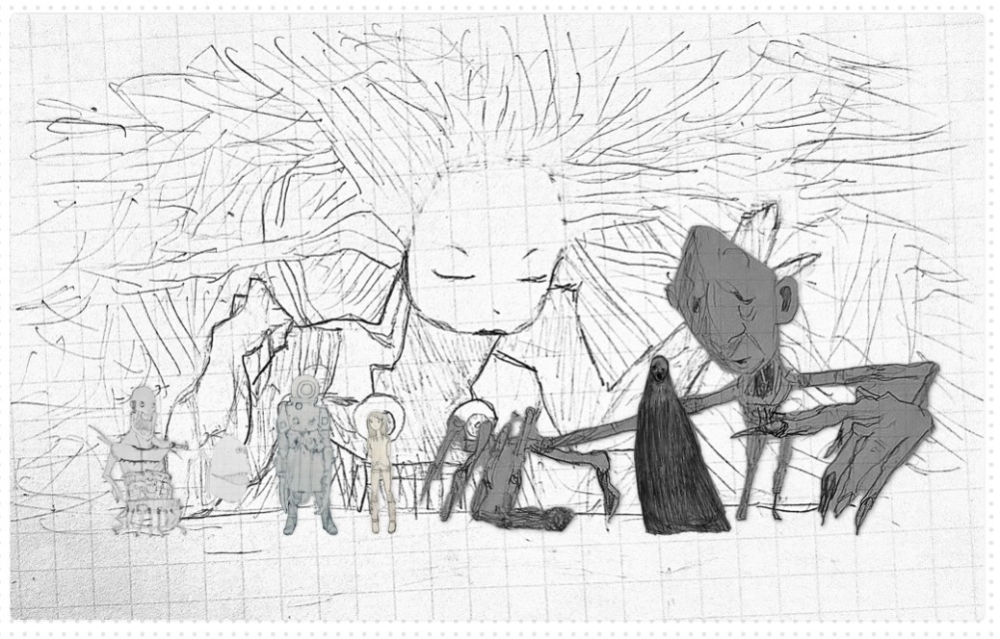
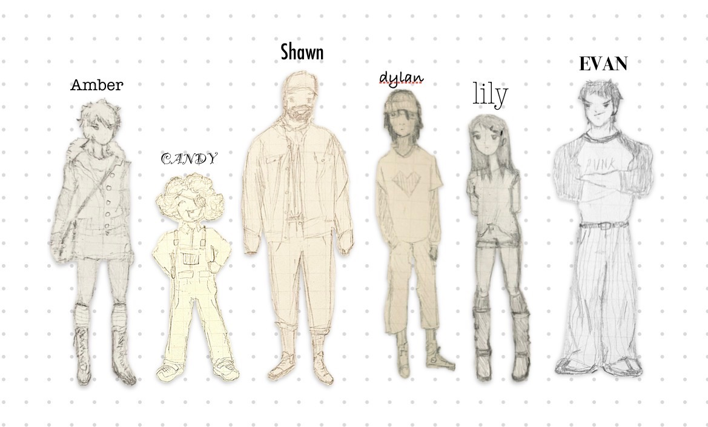

uhmm... hellow again?
2026.08.21
Hello blog! It’s been too long. I said I was going to take a 1-3 week break, but it was more like a 1-3 month break. Today, I was reading my Osaka posts, and I was so entertained. I was like “when’s the next post?… wait, this is MY BLOG!” I remembered this is my life’s purpose. I love writing so much and I love writing for this blog and I… well, I love you. >.<
Okay blog. This is the official beginning of the new phase in life called “‘till 20.” I'm still figuring out the posting schedule, but it's up and running! Woohoo!! For reference, I turn twenty March 30th, 2027. I decided not to categorize it to a specific place since I’m genuinely all over, but that’s just being a young person. This is my last year of being a teenager. It was… not fun. My twenties will bring in everything I ever hoped for: a nice apartment in Chicago, friends, and a trip to France. I am so excited. WOOOOOOOOOOOOOOOOOOOHOOOOOOOOOOOOOOOOOOOOO!!!
manifestos…
Blog, I have a general idea of where I want to head in the next ten years of my life. Here’s everything I want/hope for:
-
1.
- Nice friends 2.
- Nice apartment in Chicago (some other hip city otherwise) 3.
- Nice wooden board game table + cool games 4.
- College degree 5.
- Finish my comic 6.
- Continue my blog
I also hope for my family’s youngins to live generally next to each other (possibly in the same city), but I don’t want to tether them to my goals because I can’t control what they do. I can only hope and dream and cry.
high school
Blog, I’ve been thinking about my days in high school so much more now. I’m deciding to be vulnerable or not right now… i’m gonna do a universal ask really quick (universal ask: when you interlock your pointers and thumbs formed into circles [kinda like two interlocked rings] and try pulling them apart. If they don’t pull apart, then your question has been answered “yes.” If they do pull apart, it is a “no.”) okay, the universe has chosen for me to be vulnerable, so I will but just don’t make fun of me, or be mean, or think too much into it. Well, I had a crush on a girl in Freshman year of high school named Avery. She was in my Freshman PE class. She was short. Anyway, I was thinking about this time where we were playing some game that was like dodgeball but with medics who can revive you. When you got hit, you had to lay on the ground and wait for a medic to get you. The medics had to physically pull you by the arms to some checkpoint that was just some gym mat. You can maybe see where this is sort of going. So, I got hit and laid on the ground. Guess who ran over to me? Avery. It was very very nerve-racking and I was sweating freaking cannonballs. So, she grabbed my hands and was dragging me like a body bag and I’m so completely sure she saw my extremely hairy, stinky armpits embedding huge armpit stains in my oversized red gym tee. I swear, I have never been so nervous and clammy up until that point in life. I still think about it and facepalm. I was so embarrassed. She was genuinely so sweet and cool though so I don’t think she cared all that much.
MY COMIC!
OMG blog! I can’t believe I haven’t even mentioned my comic yet! It’s a very half-baked thing still. I haven’t really even worked on it at all other than thinking about it at night when I sleep. It’s pretty cool. It’s a demon apocalypse. I’m still trying to solve some questions, like how do my main protagonists get into the demon world? Or how did the demons get there in the first place? Do they manifest into someone’s body? Idk. I’m too lazy right now to figure this stuff out, but I will insert some photos of the various drawings sort of conceptualizing this idea:


The first photo are the various demons. The second are my characters. I’ll explain them later maybe.
i’m going to clown university
Blog, I just went to a clown slam in West Philly with my aunt… i’m gonna be a freaking clown. It’s hilarious. I love it. I knew it was my place when I saw a bunch of women in mustaches and beards. I freaking love wearing a mustache and beard. I already have my clown character. It will be “the gay hunter” who hunts little gays.
Blog, you have no idea how ecstatic i am to swing back into the motion of things. I friggin love blogging. I love reading my blogs. My body is LITERALLY burning to tell you everything. EVERYTHING. ANOTHER 50000002 POSTS WOOOO LETS GOOOOO! Ok, bye.